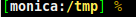
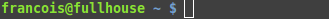

Intro to Ruby Programming
GDI Cincinnati Chapter
Ryan Dlugosz 2017, based on the GDI Seattle course
Welcome!
Girl Develop It is here to provide affordable and accessible programs to learn software through mentorship and hands-on instruction.
Some "rules"
- We are here for you!
- Every question is important.
- Help each other.
- Have fun!
What we will cover today
- What is programming?
- Why Ruby?
- Write real Ruby code!
About Me
- Ryan Dlugosz (duh-LOO-gus... it's Polish)
- Independent Consultant, Ruby (mostly)
- ryan@dlugosz.net
- GDI Slack: @ryandlugosz / #intro-to-ruby
About YOU!
…and our first look at a Ruby program!
- Who are you?
- What do you hope to get out of this class?
- What is your programming experience?
- What is your favorite food/restaurant?
What you expect from this class
- Learn a bit about Ruby Programming
- Meet people who are learning with you
- Meet people who can help guide you to the next step
Most importantly:
- Get a feel for whether programming is right for you!
(how will I know?)
What is Programming?
- Using a computer to solve a problem.
- We use Programming Languages (code!) to speak to the computer.
- Computers understand 1s and 0s
- Code is human-readable
- Programming Languages over time have become more human-readable, but all end up as 1s and 0s…
- 1s and 0s? How does that even?
- Check out Code by Charles Petzold

Why Ruby?
Ruby is a Powerful language that reads like English!
Designed for Programmer Happiness!
Welcoming, friendly community!
> Ruby.easy_to_learn? and Ruby.fun_to_use?
=> trueRuby on Rails
- Web framework for Ruby
- Some companies you may have heard of:
- Hulu
- Groupon
- Airbnb
- Square
- Kickstarter
- Github
- Shopify
- (…and more!)
What do you think this Ruby code does?
ruby> 1 + 1
=> 2
Okay, that was pretty easy… Try this one!
What does this code do?
ruby> puts "Hello World!"
Hello World!
Let's say it three times!
ruby> 3.times do
puts "Hello World!"
end
Hello World!
Hello World!
Hello World!
Let's look at the Greeter Code
puts "Hi, welcome to Intro to Ruby! What is everyone's name?"
while name = get_input_from_user
break if name.empty?
student_names << name.capitalize
end
student_names.each do |student_name|
puts "Hi #{student_name}, it is #{random_adverb.upcase} to meet you!"
end
def random_adverb
["nice", "great", "wonderful"].shuffle.first
end
Cool, huh?
Let's start coding for real!

Try Ruby
- For now, focus on what we're able to accomplish without worrying too much about remembering exactly how we're doing it.
- That intuition will develop in time!
BREAK!
Intrigued?
Let's talk in more detail about some of the things we saw.
Using a REPL
- Try Ruby is a REPL
- Read, Evaluate, Print, Loop
repl.it
repl.it is an online REPL that supports several different languages. It's a great place to try things, and makes it easy for us to share links to our code in class.
Visit the repl.it site and select "Ruby" from the menu.
Working with IRB
(optional)
- IRB (Interactive RuBy) is a command line interface to ruby that is installed when we install Ruby. It works like a calculator and is a great way to get started quickly.
- Open: type `irb`
- Quit: Type `quit` and then press `enter`
- Feel free to explore. You will not accidentally break things!
Arithmetic
Try out some calculator functions
3 + 4
2 * 4
6 - 2
4 / 2
Arithmetic
Other Ruby Math Operators
# Modulo operator (returns the remainder)
11 % 5
=> 1
# Exponent operator (2 raised to the power of 3)
2 ** 3
=> 8
Errors are Neat!
4 /* 2
=> SyntaxError: (irb):10:syntax error, unexpected *
- There are different kinds of errors that can occur. We just saw the SyntaxError which often helps us find misspelled words or missing quotes.
- Take time to read each Error. They often tell you how to fix the issue and can be a great starting point when searching for help online.
irb> hi
NameError: undefined local variable or method `hi' for main:Object
i read it.
am still confused :(
now what?
Ready for the most important tip you can learn about modern programming?
Paste your error message into Google
Variables
- Variables are references to information.
- We reference variables by name.
- They are called variables because the
information they reference may change.
# Everything after the pound sign will not be evaluated.
# These are called comments and I will use them to annotate code
age = 50
days_in_year = 365
days_alive = age * days_in_year
=> 18250
Variables, Constants, Literals
- Ruby has variables, constants and literals.
- A variable starts with a lower case letter and multiple words are separated with an underscore character (_),
like_this. - Constants do not change and are typically written in all caps.
- Literals are literal values, for example the number 3 or the string 'hi'.
Variables, Constants, Literals
# variables
age = 37
instructor_name = "Ryan Dlugosz"
# constants
BEST_FOOD = "Sushi"
PI = 3.14159
# literals
3
'hi'
What can I do with a Variable?
- Create - Initialize - Define
- Access - Read
- Assign - Replace
# create and assign in one line
age = 0
# access the value in age
age
# replace value in age
age = 40
# use it in a statement
age + 10 # => 50
Variable naming
- Make it meaningful
- Make it easy to read
- Make it concise
- Should be unique
- Should be understood by someone who has no idea what your program does
# good
occupation = "software developer"
# bad
occupation_i_always_dreamed_of_having_in_cincy = "software developer"
o = "software developer"
1st_occupation = "software developer"
Local Variable Values
- No default value
- No type declaration
- Do not live forever
# error
name
# defined, initialize, create
name = "KC"
defined?(name) # => true
Data Types
Built-in: Numbers, Strings, Symbols, Booleans, Regular Expressions, Arrays, Ranges & Hashes
- Data always has a "type"
- You will hear the words Class/Type/Object used interchangeably
- Let's explore a few built in Objects
irb> 1.class
=> Fixnum
irb> "Hello".class
=> String
irb> 1.0022.class
=> Float
irb> [1,2,3].class
=> Array
Strings
Strings are characters inside double or single quotes.
a = 'Hello '
b = "World"
c = a + b
c.reverse
=> "dlroW olleH"
a = "Spam "
b = a * 4
# Here multiplying a "Spam " by 4 concatenates (links) four strings
=>"Spam Spam Spam Spam "
together
String Practice
"Ryan".upcase
"Ryan".downcase
"ryan".capitalize
"Hello".reverse
"Ryan".length
"Ryan Dlugosz".swapcase
"".empty?
What is the reverse of your name?
How many characters long is your name?
Can you repeat the word hello 100 times?
What is the 5th character of my name?
Numbers
Numeric data comes in two types: Integers and Floats
Integers are either Fixnum or Bignum. They do not have decimals.
irb> 1_000_000_000_000_000_000.class
=> Fixnum
irb> 1_000_000_000_000_000_000_000.class
=> Bignum
Floats are numbers with at least one number to the left of a decimal point.
irb> 1.001.class
=> Float
Number Practice
7/8
7.0/8.0
3.14.to_s
3.14.to_i
1 + "2"
1 + "2".to_i
(1 + 2) * 3
1 + (2 * 3)
How many seconds are in an hour?
How many minutes are in a week?
How many years old are you if you've been alive 1 million seconds?
Symbols
You can think of symbols as lightweight Strings.
It's good to know these exist, but don't think about them too much for now.
# transient and mutable
"hello"
# permanent and immutable
:hello
Booleans
This is another Object that we will learn about later.
For now, when you hear Boolean, think TRUE and FALSE.
# NOT true
!true
=> false
# NOT false
!false
=> true
Arrays, Ranges & Hashes
We will also leave these data types for the next class
Examples of what they will look like:
# Arrays are used to hold sets of data.
irb> array_of_numbers = [1,2,3]
irb> array_of_numbers.first
=> 1
# Ranges are used to express a sequence.
irb> range_of_numbers = (1..5)
irb> range_of_numbers.include?(4)
=> true
# Hashes are like dictionaries. You can look up a value by a key.
irb> hash_of_key_to_value =
{
"Apple" => "A fruit.",
"Cucumber" => "A vegetable."
}
Methods
- Methods define the behavior for an Object.
- String Objects can reverse, for example.
- Some methods are accessed using our friend 'dot' and some are standalone.
- Let's call some methods
irb> puts "hello"
hello
=> nil
irb> "2".to_i
=> 2
irb> 2.to_s
=> "2"
irb> "2" / 5
NoMethodError: undefined method `/' for "2":String
User Input
- To obtain user input, use `gets`
- To print out information, use `puts`
- Let's create our first program together
Put the code below in a file and save it as name.rb
puts 'Hello there, and what\'s your name?'
name = gets
puts 'Your name is ' + name.chomp! + '? What a lovely name!'
puts 'Pleased to meet you, ' + name + '. :)'
Run your program from the command line:
ruby name.rb
End of Day 1!!!
Homework!
- Join GDI Slack & #intro-to-ruby
- Complete the Hour of Code
- Explore remaining Try Ruby challenges
- Bonus: Check out (free!) ebook: Learn to Program
- While you can follow the book's instructions and install Ruby on your computer, you may find it easier to use the online tool repl.it
Next Week
- Review homework
- Flow control (
if/then/elseand friends) - Arrays and Hashes
- Looping and Enumeration
- Classes and Objects
Upcoming Events
TBD
Some date, some time
Sounds like this will be great!
Even more TBD!
Another date, another time
Wow. Can't wait to see you there!
Supplemental Slides
Installing Ruby
(supplemental)
The following slides are included for reference, but are not required steps for completing this Intro to Ruby class. If you have any trouble, please ask me for help in the GDI Slack channel.
Using a Mac?
If you happen to be using a Mac, Ruby is already installed on your computer!
Using a Windows PC?
Download and run the Rails Installer for Windows (Ruby 2.2 version).
RailsBridge Installfest
The RailsBridge organization maintains a great resource for installing Ruby on your computer. Check it out!
These instructions could be helpful if you run into trouble.
http://docs.railsbridge.org/installfest/
Just work through the instructions for your operating system. For our class, you'll only need to advance through the first steps, but you're welcome to advance further if you're curious or plan to write a Rails applications.
Intro to Terminal
Working in the terminal can be really intimidating at first!
With practice, navigation and file manipulation is significantly faster in the terminal than in the GUI.
Professional software developers use the terminal all the time, and this class will require some use of it.
Intro to Terminal
Mac & Linux users: Open Terminal
Windows users: Open Git-Bash
We will not be using Windows "cmd" program, as it uses a different syntax than *NIX systems.
Intro to Terminal Prompt
The line that appears in the terminal when you open it is called the prompt. It usually contains information about the user and current directory. It can be customized.
 Terminal instructions often start a line with a $. This represents the last character in the prompt, you don't have to type it.
Terminal Cheatsheet
. |
the current directory- ex: "touch ./wow.txt" |
.. |
the parent of current directory - ex: "cd ../RubyParty" |
~ |
the root directory- ex: "cd ~/Pictures" |
cd [location] |
"change directory" to [location] |
pwd |
"present working directory" - where am I? |
ls -al |
"list all" of the contents of current directory, including invisible ones |
touch [filename.extension] |
create a file called filename.extension in the current directory |
mkdir [directoryname] |
create a directory called directoryname in the current directory |
rm [filename] |
"remove" (delete) the file called filename |
rm -rf [directoryname] |
"remove recursively with force" the directory called directoryname |
clear OR cmd+k |
clear the terminal screen |
help |
lists all possible commands |
man [command] |
displays the manual for command |
Terminal Activities
# navigate to your desktop
cd ~/Desktop #Linux, Mac
cd desktop #Windows
# make a directory called ruby_adventures
mkdir ruby_adventures
# navigate into new directory
cd ruby_adventures
# create a file
touch class0.rb
# list the contents of the directory
ls
Terminal Activities
man ls
Output: